Summarize, in about one paragraph, your approach to the materials assignment. How did you structure your code? What's cool about it? Are there parts you weren't able to complete?
I retrofitted the texture loading code to make texture descriptors per material. At midnight today(3/1/2026), I still have normal mapping and the creative model to finish. Update: now, on 3/3/2026, I have finished normal mapping and create.
Describe the model and texture you created and include a screen recording showing it running in real-time:
Describe your creation process for the model and texture.
I made a low-poly model in blender and duplicated it to make a high-poly version. Then I sculpted the high poly version to resemble a tree's surface. Then I used blender's baking functionality to bake the surface variations relative to the low poly version onto the low-poly model's normal map.
For each of the following sections, describe the overall structure of your code, and reference the specific files/functions/data structures that you used. For any parts that are incomplete, discuss what you were able to do and what you tried but couldn't get working.
The purpose of this section is to get you to think critically about your code by explaining it to course staff; these thoughts may help you improve the code as you work on it in A3 and beyond. This section also forms a road map to your code that we can use while grading.
Cover, at least:
your changes for the new "ENVIRONMENT" type;
your choice of coordinate systems for the environment map;
your handling of the high dynamic range.
Include a screenshot (or, ideally, recording) of your viewer drawing a scene with both the `environment` and `mirror` materials.
I made another pipeline with a push constant to for the shader to decide whether to sample the environment map using the normal vector or the reflection vector. The lighting is done in world space by passing in eye and calculating the view vector using the fragment position and the eye position. High dynamic range is handled through the reinhard curve, keeping it below 1.
Cover, at least: your choice of tone mapping operator, your viewer's output color space and format.
The tone mapping operator is the reinhard operator: L/L+1. Viewer's output color space is VK_COLOR_SPACE_SRGB_NONLINEAR_KHR with format VK_FORMAT_B8G8R8A8_SRGB.
Include a screenshot of your viewer drawing an example scene before and after implementing tone mapping.
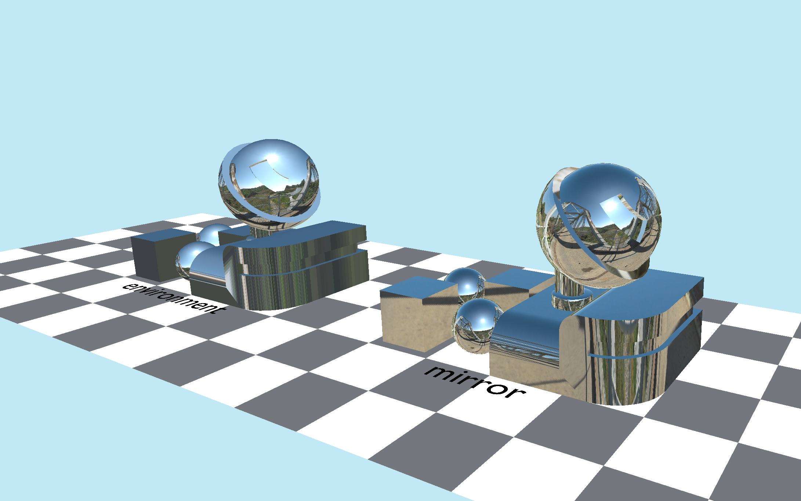
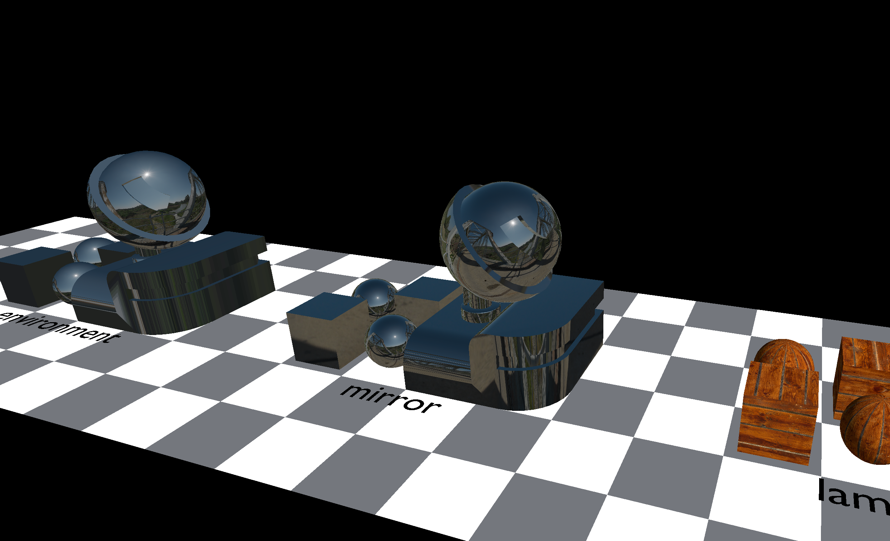
Include a graph of your tone mapping operator's curve. Consider including histograms of the output values to help illustrate how the curve is working.
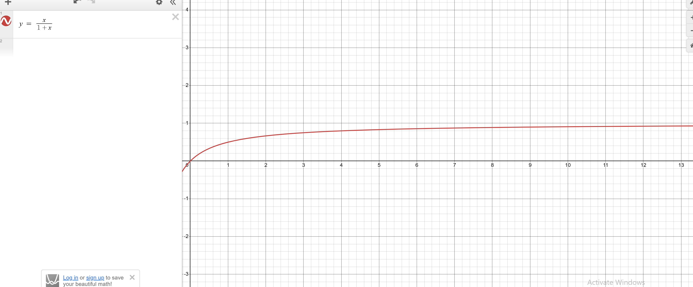
Cover, at least: your implementation of cube map handling; your implementation of the cube utility.
The cubemap is loaded into textures using the function make_cube_image(), which makes a Vk_Image with all the configurations to make a cube type image. Then, it's image view could be made adaptively since I added a is_cube_map bool field to the AllocatedImage struct. The cube utility is just another main cpp file that loads the cubemap, reserve a output cubemap, and integrate over the whole original cubemap for every texel on the output cubemap.
Include the output image your viewer produces from drawing the unit cube with the "lambertian" materials.
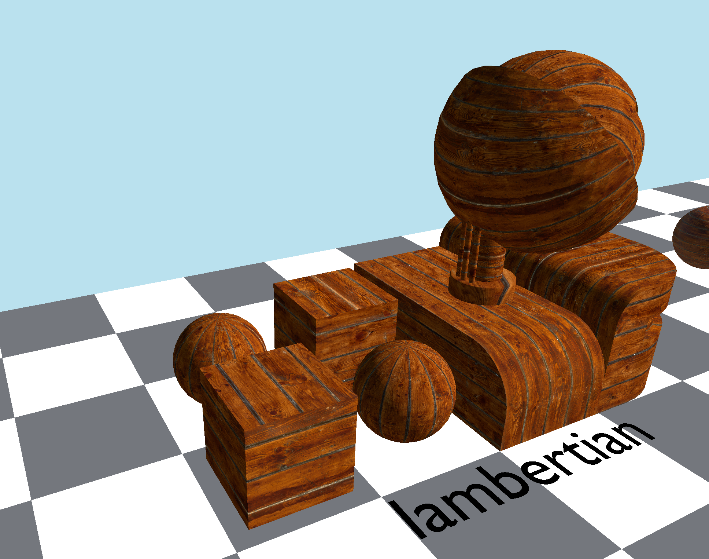
Include an example of a lighting environment and its precomputed lambertian lookup table. (You can use https://github.com/15-472/cube-viewer/ to show cube maps in our format; you might even consider embedding it in your report to show cubes live.)

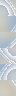
Cover, at least: your choice of coordinate systems for the normal map.
The normal mapping is done in tangent space. The local normal and tangents are passed into the vertex shader and transformed to world space using the inverse transpose of th world from local matrix. In the fragment shader, the normal is sampled from the normal map and normalized xyz from [0, 1] to [-1, 1].
Include a screen recording or a sequence of screenshots showing normal maps working. (E.g., demonstrate how moving the light changes the shading; show the same object with and without its normal map to show that detail is, indeed, being added.)
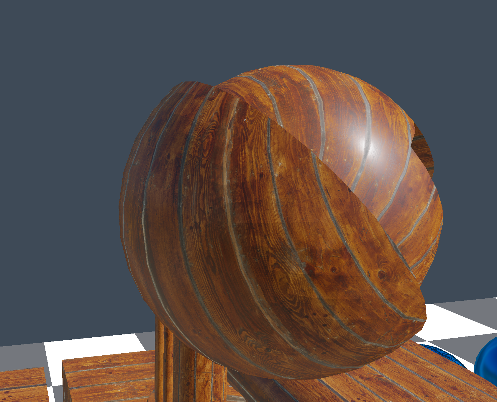

Include screen shots demonstrating that normal mapping is working with all material types.
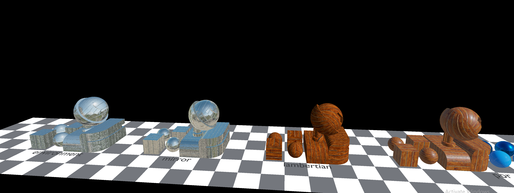
Cover, at least: your implementation of a specular look-up mipmap; your implementation of the cube utility.
The ggx cube mipmaps are generated using the importance sampling code from Karis' notes, and also https://learnopengl.com/PBR/IBL/Specular-IBL for the application example of Epic's method.
Include the stack of look-up cubemaps your utility produces when run on an example lighting environment.
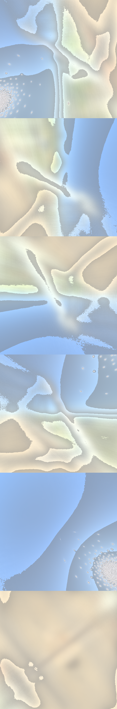
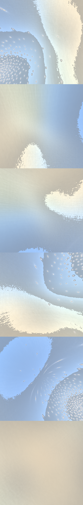
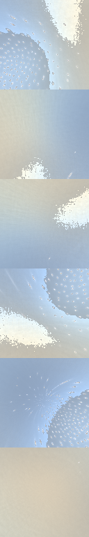
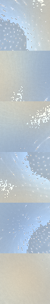
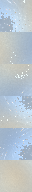
Show screenshots or screen recordings of a variety of interesting material appearances demonstrating the parameter range of the "pbr" material.
.PNG)
Cover, at least: your choice of coordinate systems for the displacement map.
Include a screen recording or sequence of screenshots demonstrating the parallax effect as the camera moves over a displace-mapped object.
Include screen shots demonstrating that the displacement mapping is working properly with all material variations.
This section demonstrates that you have tested your code, including finding its limits.
Before getting into the tests, describe here the relevant information about your testing system(s). (CPU, GPU, Memory, driver versions, OS version, ... -- anything you think might be relevant!)
The CPU is AMD Ryzen 7 7700X 8-Core, GPU is NVIDIA GeForce RTX3060, I have 64 GB of RAM and I use windows 10
Compare the relative performance of the various material types in this assignment. Illustrate the costs of adding normal (/displacement) maps.
The cost of adding normal / displacement maps is one, that the normal map has to be streamed to the GPU and sampled, and two, the rebinding of normal maps for different object instances.
Compare the relative performance of a high-resolution mesh with a lambertian material to a low resolution mesh with a normal map and a lambertain material. (When) is texture detail really cheaper than vertex detail?
Texture detail is cheaper than vertex detail when there's a substantial number of vertices. Although there is the added cost of sampling and binding a normal map, the cost is negligible compared to the cost of representing surface detail using actual vertices.
This is the end of the structured report. Feel free to add feedback about A2 to this section.